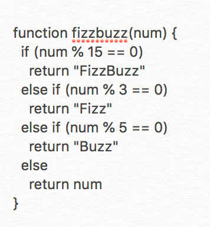

Technical - Sprint 4
Problem Solving
I found myself blocked on a very simple problem this week when working on a challenge called Super FizzBuzz. The task was relatively simple. It was to replace numbers with words using code. I managed to write some code very loosely (it looked wild) and it partially worked which was great! I felt really happy … until it really didn’t work at all as a final solution. *Big sighs*
Some problem solving techniques I used were writing the steps out for myself in sentence form, googling, trying things and reaching out to a peer. In the end I found that my code wasn’t working as it should because I had condensed all of the necessary pieces of the puzzle into just the one messy block of code that made no sense. I felt very silly once the solution was made clear to me, so I spent a good amount of time writing the solution out for myself in full sentences so that I could explain and understand what was happening and why.
I can’t say that I solved a problem in an elegant way this week but I’m sure in the future I will! My key takeaways from this experience were: try as many things as possible (and keep trying), ask for help from others and to try not to give up when things get difficult.
Problem solving techniques
Pseudocode -
I haven’t quite mastered pseudocode just yet but I know this is a method that I’ll find really helpful in the future. Currently I find it more helpful to write the code as full sentences so that my brain can process the request and find a way forward with all the information it can possibly get. It’s sort of a mash up of pseudocode and rubber ducky methods in one. For example, this is how I wrote about the first function for the Super FizzBuzz challenge:
This function is about replacing numbers with strings (words). We want to count from 1-100, noting if the numbers between 1-100 can be divided by 3, or by 5 or by both 3 & 5. The smallest number that is a multiple of both 3 & 5 is 15 so we will use 15 in place of '3 & 5'. We will use if, else if and else statements to do this. The order of the statements is important because 15 is divisible by both 3 & 5, so if the statements to check for multiples of 3 or 5 come before 15, they will return the first condition applicable in the list.
The first statement is: if the number is divisible by both 3 & 5 (15) and therefore the remainder is 0, then print FizzBuzz. The second statement is: if the first statement doesn't return FizzBuzz because its divisible by 15, is the number divisible by 3 alone? If yes and therefore has a remainder of 0, then print Fizz. The third statement is: that if the second statement doesn't return Fizz because its divisible by 3, is the number divisible by 5 alone? If yes and therefore has a remainder of 0, then print Buzz. The final statement is: if none of the above statements are true, then print the value of number.
This is what my code looked like:

Trying something -
I’m all for trying something as a problem solving technique but only if I already have a hunch about the solution. It’s worked a few times for me this week but I wouldn’t say its super helpful if I’m unclear about the task at hand. Blind guessing is not the best way forward.
Rubber ducky method -
I haven’t given this a go with an object yet but it seems sort of similar to the process I’ve mentioned under pseudocode, in that its helpful to lay out all the info, as if its for someone else so that you can begin to work through roadblocks without getting in your own way.
Reading error messages -
I like reading through the error messages. They’re so helpful and tell you what you need to do. I’m not fully confident understanding the prompts all the time, but even if I don’t know what exactly they’re asking me to do, it’s nice to have a prompt for something that is researchable.
Console.logging -
I haven’t been using this much just yet but anticipate I will once everything I’ve been learning about the past few weeks starts to make a little more sense.
Googling -
I love researching! Google has definitely been my best friend this week. I found it so valuable to be able to ask really silly straight forward questions, 100 times a day when my brain wasn’t able to recall things I had learned the week before in sprint 3. Definitely my most highly used tool for problem solving!
Asking your peers and coaches for help -
I definitely asked for help this week from peers and my facilitator Emily. It made me feel less alone in the task when I was freaking out, and also helped a lot with my overall learning for the week. It can initially be a little bit embarrassing to ask for help when you’re really not getting the content, but I’d say this is a very important problem solving process to implement in the future. Team work!
Reflection -
This is a big one for me and I guess ties in a little with what I’ve mentioned in pseudocode and the rubber ducky method. I really find it helpful to know why it is that something works, and if I can’t find that solution myself, I like to work backwards from an answer to better understand the question in the first place.